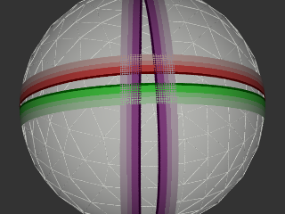
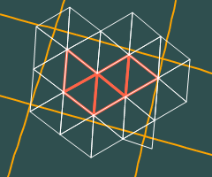

|  | This convex consists of a polygon defined by its four vertices and the four great circle segments that form its edges. Note, that all halfspaces in the convex specification are zero halfspaces. |
POLY J2000 -109.55 41 -102.05 41 -102.05 37 -109.55 37
REGION CONVEX 0.16408633555203456 0.5798688163263036 0.79801493114943456 0 -0.97796579112795223 0.20876520635268361 1.9894623485011255E-16 0 -0.17884992645074524 -0.63204224045914992 -0.75401280498671974 0 0.94234983075993217 -0.3346293419094134 0 0
Region reg = Parser.compile( "POLY J2000 -109.55 41 -102.05 41 -102.05 37 -109.55 37"); Listrangelist = Cover.HidRange(reg);

14367202476032, 14367470911487 15264313769984, 15265387511807 15265655947264, 15266461253631 15266729689088, 15268608737279 15311558410240, 15312632152063 15312900587520, 15313705893887 15314779635712, 15315853377535